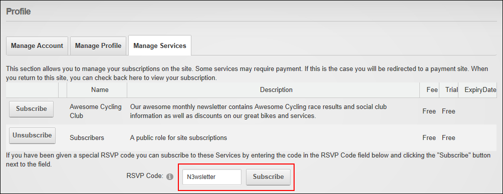

Subscribing to a Service with an RSVP Code
How to subscribe to a member's service using an RSVP code provided by an Administrator. Subscription grants you immediate access to any pages or content restricted to service subscribers.
- Login to the site. See "Logging into a Site"
- Click on your [Display Name] link (typically located in the top right corner of the site) - OR - Navigate to a ViewProfile module. This displays the user profile page.
- Click the Edit Profile button. This displays the Manage Profile page.
- Select the Manage Services tab. This displays a list of the available services.
- In the RSVP Code text box, enter the code supplied to you.
- Click the Subscribe link to the right of the RSVP Code text box. If a fee is charged for this service you will now be redirected to the payment website to complete the payment process. Once you have successfully subscribed to the service this message is displayed at the top of the module: " You have successfully subscribed to the [Service Name] role."

- Optional. Refresh (Ctrl + 5) your website browser to access any new areas such as pages or modules. If this is not successful, try logging out and then logging in again.